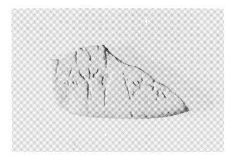
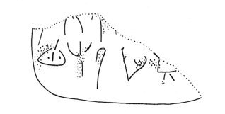

-
PH30
Names
Aliases for the inscription.
PH30, PH 30
Support
Type of Object.
Tablet
Location
Site where object was found.
Phaistos
Findspot
Location at Site.
Unavailable


# "Row Index", "Line Index", "Word Index", "Syllabogram", "Status of Reading"
# R L W I S
# 1 0 1 PA certain
1 1 0 TI none
1 1 1 ¹⁄₄ none
2 2 2 MA none
2 2 2 RE none
2 2 2 RI none
2 2 2 MI none
2 2 2 DE none
Scribe
Writer of Inscription.
Unavailable
Context
Approximate Date of Inscription.
Middle Minoan II
1800-1650 BCE
Dimensions
Height x Length x Thickness.
[3.00]
[3.80]
0.80
cm
GORILA OCR
Catalogue
Museum Reference Number.
HM 1537
Hiraklion Museum
Readings
Linear A Transcription
A Linear A transcription with words parsed separately.
Line breaks match the inscription.
𐘠𐝃
𐙁𐘙𐘭𐘻𐘦
ASCII Transcription
An ASCII transcription with words parsed separately.
Line breaks match the inscription.
TI¹⁄₄
MARERIMIDE
Linear A Tabulation
A Linear A transcription with words parsed separately.
Line breaks are logical, e.g. to represent a list.
𐘠𐝃
𐙁𐘙𐘭𐘻𐘦
ASCII Tabulation
An ASCII transcription with words parsed separately.
Line breaks are logical, e.g. to represent a list.
TI¹⁄₄
MARERIMIDE
Commentaries
PH 30
, page
tablet (HM 1537) (GORILA I: 316-317; Haghia Photini, vano iota, MM II
context)
|
side.line
|
statement
|
logogram
|
number
|
fraction
|
|
|
supra
mutila
|
|
|
|
|
.1
|
]-
TI
|
|
|
E
[
|
|
.2
|
]MA-RE-
RI
-MI-
DE
[
|
|
|
|
2: ]MA-RE
E
MI-
DE
[ ?
Commentary © John Younger
References